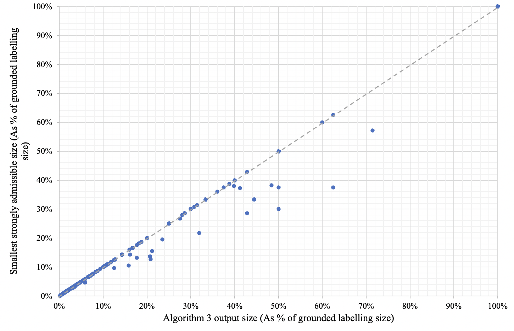

Strong Admissibility, a Tractable Algorithmic Approach, is the key concept underlying grounded semantics. They present two polynomial algorithms for constructing relatively small strongly admissible labellings for a particular argument. The algorithms can be of practical value in situations where the aim is to construct a minimal or near-minimal strongly admissibility labelling in a time-efficient way. For instance, to show that an argument is in a preferred extension, it is not necessary to construct the entire extension the argument is contained in.
A strongly admissible set (labelling) can be used to explain that a particular argument is in the grounded extension. The question is whether one can identify an expanation that is minimal. This is in sharp contrast with the complexity of the general verification problem of strong admissibility (i.e. verifying whether a set/labelling is strong admissible, without the constraint that it also has to be minimal) In the current paper they introduce an alternative algorithm which, like the grounded semantics algoritms, runs in polynomial time.
Definition 4 requires Args′ to be a subset of Args \ {A}. They also observe that although {C, H} is an admissible set, it is not necessarily strongly admissible. They use the terms smaller, bigger, minimal, minimal and maximal in relation to the size of the respective labellings, unless stated otherwise, in the remainder of the current paper, they use the term 'min-min-max' in the context of a min-max numbering.
A strongly admissible labelling is an admissible set whose min-max num-bering yields natural numbers only. The relationship between extensions and labellings has been well-studied They present an algorithmic approach for computing a relatively small1-2-strongly admissible labelling. The first algo-rithm (Algorithm 1) basically constructs a strongly admissable labelling bottom-up, starting with the arguments that attack attackers and continuing until the main argument (the argument for one of a strongly-isolated labelling) is labelled in.
The third algorithm (Algorithm 3) then combines Algorithm 1 (which is used as the construction phase) and Algorithm 2 (used as the pruning phase) Algorithm 3 is then used as a construction phase. The algorithm 3 combines the construction and pruning phases of each algorithm. Algorithm3 is used to build and prune the labels of the labels. AlgorithmscomparewithAlgorithm1 small with respect to the size of the
Algorithm 1 is to start constructing the grounded labelling bottom-up, until they reach the main argument that they are trying to construct a strongly admissible labelling for; this argument should hence be labelled in. They had to adjust this algorithm in two ways to run faster than some of the alternatives or They want the algorithm to stop once it hits (C) instead of continuing to construct the entire grounded labeling. Second, they want it to compute not just the labelling itself, but also its associated min-max numbering, in order to achieve the best performance. They need to show that the algorithm is correct, and that labels A together with its labels A
Construct a strongly admissible labelling that labels A in and its associated min-max numbering MMLab. Algorithm 1 Constructs an argumentation framework AF = (Ar, att), an argument A ∈ Ar that is in the grounded extension of AF. The output is labelled Lab where A ∉ in(Lab), a label A in(Lab) and a label X, a label Y, a number Y. The algorithm produces an argument that has no attackers or no arguments that do have attackers.
They state and prove that Lab is admissible in every stage of the algorithm. They prove this by induction over the number of arguments that are added to unproc in during the execution of the while loop of lines 21-37. MMLab(x) is an admissible labelling for an arbitrary argument x. For each argument x that is added to the algorithm in, Mmlab(X) ≥ 1. The algorithm is called Algorithm 1 and the algorithm is then called Algorithgorithms 1.
Algorithm 1 (especially line 22 and line 30) implements a FIFO queue for the in labelled arguments it processes. This is an important difference with the algorithm of, which uses a set for this purpose. Using a set is fine if the aim is merely to compute a strongly admissible form of labelling, having a set as the basic data structure could compromise the algorithm’s correctness. At the second iteration of the while loop, suppose C is the selected argument X from unproc in is selected (line 22) This means that E gets labelled out and F gets labelled in.
The min-max number of an outlabelled argument should be the minimal value of its in labelled attackers, plus 1. This is because out labelled argu-ishlyment E is numbered 4, whereas its two in labeled attackers C and D are numbered 3 and 2, respectively, respectively. This implies that E should be 2 instead of 4, which implies that the correct minmax number of F should be 3 instead of 5, which is the same as E's 4.
Algorithm 1 determines min-max number of an out-labelled argument as soon as the min-Max number of its first in labelled attacker becomes known. This avoids having to recalculate number of out-labeled arguments once more of their in-labelling arguments become available. Algorithm then uses a queue to process arguments in the order of their min-min-max numbers. They show that the property holds after n arguments have been added to unproc in by the while loop (lines 21-37)
MMLab is correct at the start of each iteration of the while-loop. They prove this by induction over the number of loop iterations. The order of arguments removed from unproc in is non-descending w.r.t.t. That is the order of additions to unproc. in before Xnew is done according to the FIFO (First In First Out) principle. They need to prove that for every x in Ar: if Lab(x) = in, then M.m.y attacks x and Lab(y) = out, therefore M.MMLab(Yold) is a correct min-max numbering of 1.
At the start of a particular loop iteration, MMLab is a correct min-max numbering of Lab. At the end of the for loop (lines 9-18) no argument is labelled out by Lab. They need to prove that if there is a next loop iteration it is still the case that Mmlab is still a correct Min-max number. They distinguish two cases: (a) x was already labelled in at the start, (b) x became labelled in during the current loop iteration. In that case, X was removed from unproc in during one of the previous loop iterations.
MMLab(x) is the correct min-max number of x at the time it was assigned (line 32) They can use similar reasoning as at the previous point (point (a) to obtain that it is still the correct Min-Max number at the end of the current loop iteration. This means that X′ was removed from unproc in before X was removed, which implies (Lemma 5) that (MMLab) ≤ MMLa(X
MMLab(x) = min('MMLab) + 1 at the start of the current loop iteration. 2. If Lab(X) = out then MMLa(x), if Mmlab(y) is labelled out, if MML(Y) is assigned, this value will still be the same at the end of the loop. They need to be sure that this value is still correct at the time of each iteration. In order for a labelling to be strongly admissible, its min-max numbering has to contain only natural numbers only (no ∞)
For each in or out labelled argument x ∈ Ar, MMLab(x) is a natural number. They prove this by induction over the number of iterations of the while loop at lines21-37. This is just after the for loop at lines 9-18 has finished. They need to prove that for each in/out labelled argument X is a number that is a naturally number. For each argument X was labelled in at the start of the current loop iteration. For example, X is an attacker of Y that became labelled in during a previous iteration of the. while loop.
The algorithm is the only argument labelling that is both strongly admissible and complete (Definition 7) It holds that the grounded (AF)labelling of AF is the same as Labgr (Labgr) and MMLab (MMLab) At the end of the algorithm, it holds that undec pre(x) = 0 which implies that x became labelled in (unproc in) at the moment when undec Pre(X) became 0 (at either line 11 or line 28)
The proof is similar to the first half of the proof of Lemma 6. It holds that Lab is an admissible labelling that labels A in and has MMLab as its min-max numbering. In this case the value of Lab at the time of the return statement (line 33) is still a correct min-min numbering of the value Lab at line 33. The proof proves that Lab labels A as in or out labelled argument with a natural number (no ∞) The proof follows directly from Lemma 2.2.3.4.
The algorithm runs in polynomical time (more specific, in cubic time) Algorithm 1 computes Lab and MMLab in O(n)3 time. The for loop (lines 9-18) can have at most n iterations. For each iteration of the while loop, the outer for loop will run at least n times. Algorithm 2 is to prune the part of the strongly admissible labelling that is not needed, by identifying the part that actually is needed.
Algorithm 2 Prune a strongly admissible labelling that labels A in and its associated min-preferred numbering MMLabI. Algorithm 1: Prune an argumentation framework AF = (Ar, att), an argument A ∈ Ar that is in the grounded extension of AF, A strongly admissiblelabelling LabI where AAlabeled in(LabI) and the associated minpreparationMMLabO. The algorithm 1: Unproc in: [X1,..Xn] (Xi ∉ Ar for each 1 ≤ i ≤ n)
Algorithm 2 terminates when an argument is added to unproc in at each iteration of the while loop of lines 12-25. This is because there are only a finite number of arguments in the argumentation framework, and because no argument can be added more than once. They prove that the labelling that is yielded by the algorithm is smaller or equal to that of the algorithm started with. They also prove that LabO ⊑ LabI is a strongly admissible labelling where A is labelled in and MMLabI is the associated min-max numbering.
Out(LabO) ⊆ out(LabI) is a strongly admissible labelling where A is labelled in and MMLabI is the associated min-max numbering. They prove that the output of the algorithm is at least admissible (the fact that the algorithm’s output of Algorithm 2 is proved further on). Theorem: LabO labels A in follows from the fact that LabI(X) = in (line 8 or 21) As LabI is admissible, each attacker of X (such as Y) is labelled out by LabI.
Let AF, A, LabI and MMLabI be given as input to Algorithm 2. It holds that the output numbering is actually the correct min-max numbering of the labelling of the output labelling. This follows from Theorem 13 and lines 9, 17 and 22 of Algorithms 2. Theorem 16: If LabO(x) = in then MmlabO(X) = out, it follows that all attackers of x are labelled out.
Theorem: outputlabelling is strongly admissible. MMLabO(x) = min({MMLabI(y) | y attacks x) and (y) = in ) + 1, it follows that the output of a labelling where A is labelled in and (Y) is attacked) Theorem 17.2: The output of LabI(Y) attacks x and (A) attacks X) is admissible, and (MMLO)
Algorithm 3 is to combine Algorithm 1 and Algorithm 2, by running them in a sequence. The algorithm runs in polynomial time (more specific, in cubic time) It holds that LabO is a strongly admissible labelling of AF (Theorem 14) with MMLabO as the associated min-max numbering. Algorithms 1 and 2 can be run at most n iterations at most of the while loop. The while loop (lines-only loop) removes arguments from unproc in, which can be done n times at most, given that no argument can be added to unproc.
Algorithm 3 Construct a relatively small strongly admissible labelling that labels A in and has associated min-max numbering. It holds that the algorithm computes Lab and MMLab in O(n3) time. The next step is to empirically evaluate the performance of the algorithms. For this, they compare both their runtime and output with that of other computational approaches. The algorithm is not guaranteed to create an absolute smallest labelling, but the problem is the problem of finding the absolute smallest.
The smallest admissible labelling is coNP-complete, whereas Algorithm 3 is polynomial (Theorem 20) In essence, they have given up absolute minimality in order to achieve tractability. They conducted the experiments on a MacBook Pro 2020 with 8GB of memory and an IntelCore i5 processor. After considering 514 arguments, they found 277 argumentation frameworks yielded a grounded-free extension that is not empty (meaning they could used for current purposes) Algorithm 1 tends to be smaller than the size of the grounded labelling in 63% of the 277 examples they tested for.
Algorithm 1 output size is 76% to 89% of the size of the grounded labelling. Algorithm 3 has a size that is 25% smaller than Algorithm 2. Algorithms 1 and 3 are compared to each other. Theorem 22 states that the output of the algorithm 3 cannot be bigger than the output one of the algorithms. The algorithm 1 output is 76%, the algorithm 1 produces a smaller strongly-admissible labelling than that of Al algorithm 3. The algorithms were compared in a similar way as they previously did for Algorithm One.
The output of the best performing algorithm (Algorithm 3) is 32% smallerthan output of Algorithm 1. Algorithm 3 produces a smaller labelling than that of the main argument in question. They compare the size of the output of the algorithm with size of an minimal strongly admissible labelling. The runtimes of the algorithms are very similar to some of the existing computational approaches, such as the ASPARTIX-based approach of. The next thing to study is how the runtime of the algorithms compares with the runtime behaviors of other computational approaches.
On average, the ASPARTIX framework took 12.5 seconds (907%) more than Algorithm 3 to solve the test instances. The k-approximation problem for strong admissibility is NP-hard, meaning that a polynomial algorithm cannot provide any guarantees of yielding a result within a fixed parameter k from the size of the absolute smallest strongly admissible labelling for the main argument in question. Each algorithm runs in polynomial(cubic) time (Theorem 11 and Theorem 21)
The output of Algorithm 3 on average is only 25% of the output of the biggest strongly admissible labelling (the grounded la-naissancebelling) The research of the current paper fits into the long-term research agenda of using argu-uvementation theory to provide explainable formal inference. The research was based on benchmark examples submitted to ICCMA'17 and ICCMA’19. The outputs of both or algorithms return a strongly. admissible. labelling that is significantly smaller than the biggest strong admissible laboratoryelling.
Algorithm 3 output size (As % of smallest strongly admissible labelling size) is a percentage of the size of the grounded labelling. 91%.8%.1% of examples have been found to be true. The main topic of the current paper is how to construct a relatively small strongly.ly admissible. labelling(for a particular argument) in a time-eficient way. In the following two sections, they study the questions in more detail.
They compare the runtime of Algorithm 3 of the work of Lemma 9 of with the own Algorithm for computing the grounded labelling and it’s associated min-max numbering. Each of the two algorithms was run on 277 examples of the earlier mentioned testset. The results are provided in Figure 9. On average, the. runtime of the algorithm of. Algorithm 1 is 3%(0.067 seconds) longer than the.runtime of Al.gorithm 1 with lines 15, 26 and 32 commented out.
Algorithm 3 contains Algorithm 2 whose correctness critically depends on the presence of a min-max numbering. Algorithm 1 in its unmodified form will yield the roughly strongly admissible labelling of {A, C, E}, {B, D, {A], {C, E, {D, {E}}, {A,' 'C' and 'A'' The algorithm could decide that B already has an in-labelled attacker (E), rather than adding it to the minimally numbered attacker (A) The algorithm would be guaranteed to be correct without the numbering. They now examine, the question of how to compute, an arbitrary strongly ad
In section 4.2, they compared the runtime of Algorithm 1 and 3 with the run-time of the ASPARTIX-based approach of. The results are pro-glyvided in the Figure 12.2. On average, the Algorithm of Lemma 9 is 16% of the run time of the approach The runtime of computing the Algorthim of Lemmma 9 compared to the runtime (or Algorithm 3 of [14) of the ASARTIX approach)